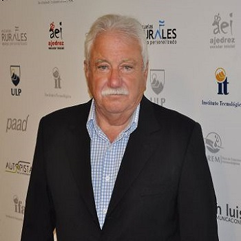

<div class="container">
	<div class="row">
        <div id="speaker-detail" class="col-lg-10 col-lg-offset-1">
            <div class="row">
            	<button title="Close (Esc)" type="button" class="mfp-close">×</button>
                
                <div class="col-md-5 col-lg-5 no-padding">
                    
                </div>
                    
                <div class="col-md-7 col-lg-7">
                    <h2>Dr. Jorge Luis <span>Pellegrini </span></h2>


                    <div id="content">
                        <p style="text-align: center;">
                            Current Director,<br>
                            The Institute for Social and Psychosocial <br>
                            University of La Punta San Luis; Argentina

                        </p><br>
                        <p style="text-align: center;">
                            Former  Vice Governer, San Luis Province, <br>
                            Argentina (2007-2011)<br>
                            Former Director of Mental Health School <br>
                            Hospital of San Luis<br>
                            Former Head of Mental Health Program of San Luis

                        </p>
                        <p style="text-align: center;">
                            Awarded the title: "Geneva 2005" by<br>
                            The World Psychiatric Association (WPA) for <br>
                            Human Rights in Psychiatry
                        </p>

                    </div>
                </div>
            
            </div>
        </div>
    </div>
</div>